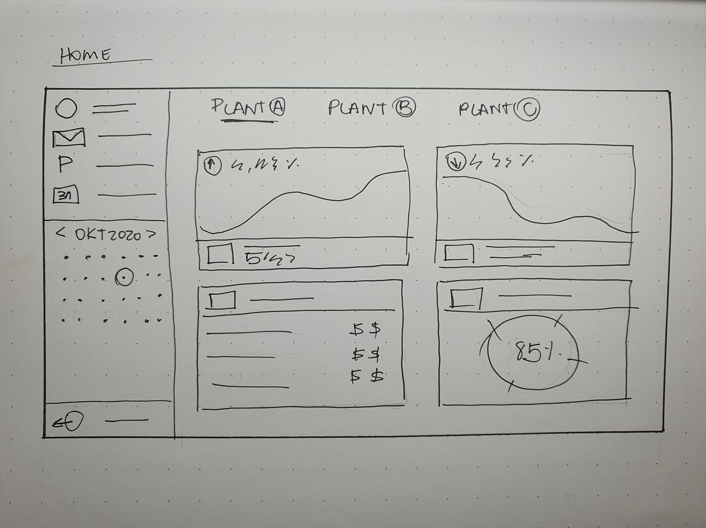
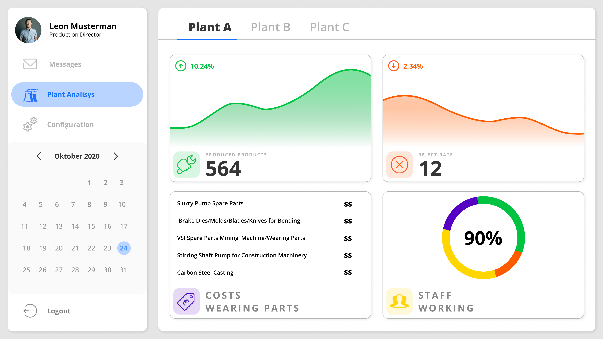
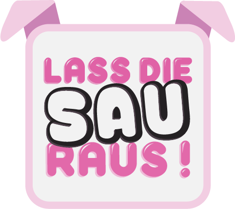
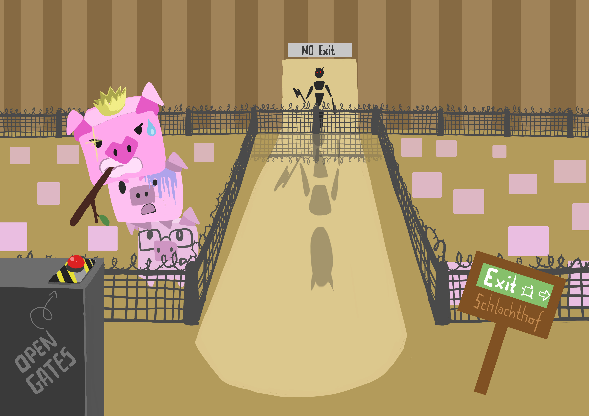
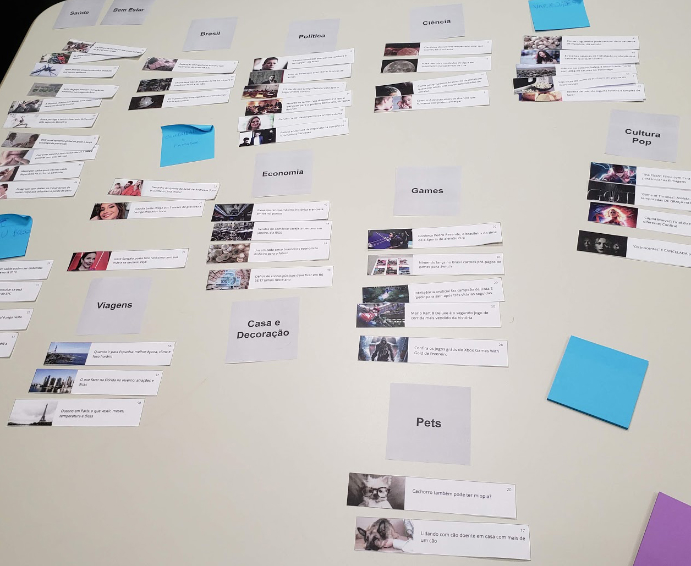

Portfolio
Willkommen auf mein Portfolio :) Hier können Sie einen Blick auf einige der Projekte werfen, an denen ich teilgenommen habe.
Viel Spaß!
GUI
Eure Aufgabe ist es, eine GUI auf Basis des anfänglichen Briefings des Kunden zu erstellen:
Unsere Geschäftsführung erhält alle relevanten Daten unserer Werke vom Controlling als Excel-Datei. Unsere Sekretärin verarbeitet diese Exceldaten zu Diagrammen und kopiert die Exceldatei auf unseren großen Touchscreen im Hauptkonferenzraum für die täglichen Besprechungen. Wir brauchen eine zeitgemäße Lösung! Ein ausgeklügeltes, interaktives Präsentationssystem unserer Produktionszahlen für Besprechungen. Die Exceldatei liefert folgende Informationen: die Anzahl der produzierten Einheiten, die Ausschussquoten, Kosten für Verschleißteile und Krankmeldungen von Mitarbeitern. Diese Daten erhalten wir aus allen drei Werken täglich um 22:00 Uhr (Hinweis: Bildschirmauflösung: FullHD)

{kind=link}

{kind=link}

Lass die Sau Raus
Wir wollen für das Instandsetzung Medienkunst Festival ein lustiges Multiplayer-Spiel entwickeln, das auf möglichst vielen Geräten funktioniert und schnell und einfach zu spielen ist.

{kind=link}

{kind=link}

R7 Startseite
Update zum Layout eines Nachrichtenportale Brasiliens, das sein 10-jähriges Bestehen feiert. Das Projekt stellte einen Wendepunkt für eine neue Ära des Portals R7.com dar. Es bestand die dringende Notwendigkeit, die Schnittstelle der Website zu aktualisieren, um sie moderner und dynamischer zu gestalten, damit man die Höhepunkte der verschiedenen, im Laufe des Tages veröffentlichten Nachrichten verfolgen kann.

{kind=link}


Beat Up
Dieses Projekt sollte eine Installation in einer Kunstgalerie sein. Die Installation hat zum Ziel, dass die Frequenz jedes Teilnehmers die Parameter der Musik verändert und die Musik eine Wolke von Partikeln steuert, wobei jedes Partikel das Individuum repräsentiert, seine Gruppierung in Form einer Wolke aber auch das Kollektiv darstellt. Das Bild zusammen mit dem Ton bringt uns die Wahrnehmung, dass alle Teilnehmer durch ihre Emotionen miteinander verbunden sind und diese sich ständig verändern.